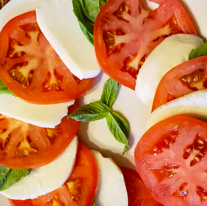

Insalata Caprese

Because this salad is so simple, fresh, top-quality tomatoes and mozzarella are important.
Ingredients:
- 4 large ripe tomatoes, sliced 1/4 inch thick
- 1 pound fresh mozzarella cheese, sliced 1/4 inch thick
- 1/3 cup fresh basil leaves
- 3 tablespoons extra virgin olive oil
- Salt to taste
- Freshly-ground pepper to taste
Directions
- On a large platter, alternate and overlap the tomato slices, mozzarella cheese slices, and basil leaves.
- Drizzle with olive oil
- Season with salt and pepper to taste